This project builds an image mosaicing pipeline from scratch: recovering homographies between pairs of images, warping images via inverse sampling with nearest-neighbor and bilinear interpolation, and blending warped images into seamless mosaics using feathering and Laplacian pyramid blending. Three image pairs were shot with a fixed center of projection, and two single-image rectification examples verify the homography and warping code independently of the mosaicing pipeline.
Three image pairs were shot with the camera rotated around a fixed center of projection, each with significant overlap (roughly 40-70%): a waterfall scene (close range, high depth variation), a mountain valley overlook (wide, mostly distant depth), and a lighthouse at sunset (distant, high-contrast landmarks).
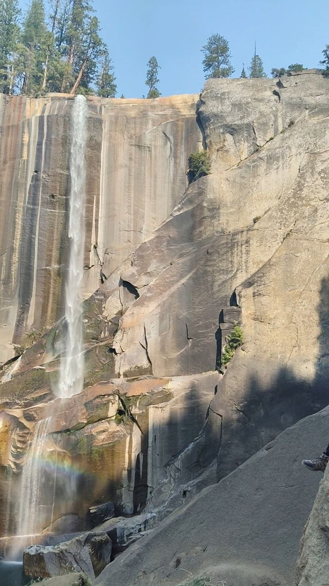
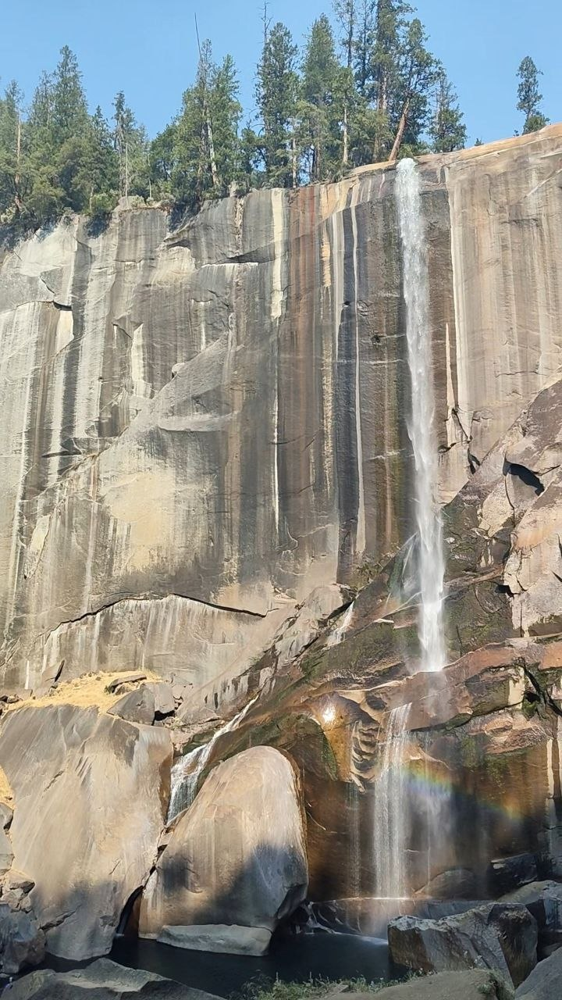
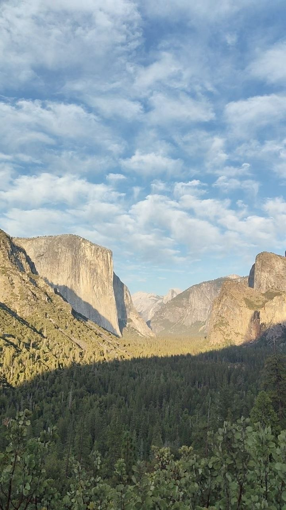
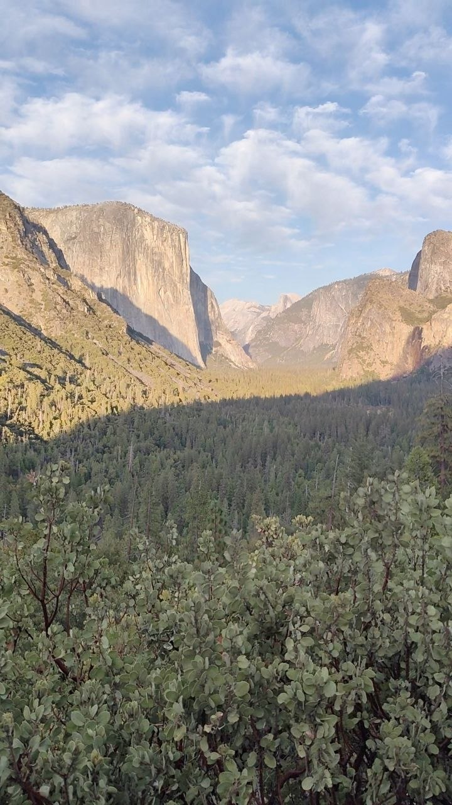
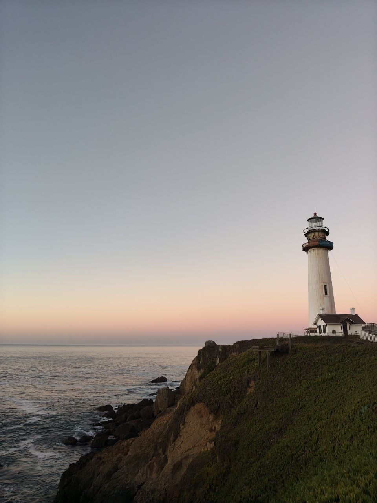
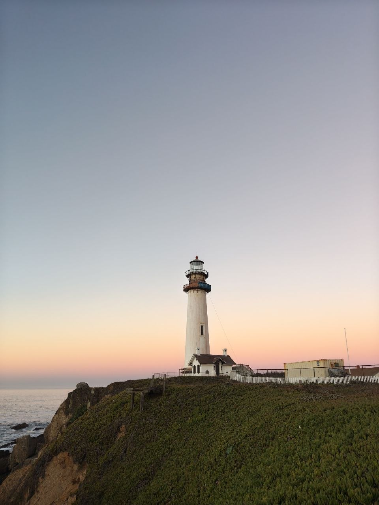
computeH(im1_pts, im2_pts) recovers the homography \(H\) from
\(n \geq 4\) corresponding point pairs. The homography maps points in
homogeneous coordinates, satisfying \(p' \sim Hp\), where the transformed
coordinates are divided by their third component to obtain pixel coordinates.
Each correspondence provides two linear equations. For the three mosaic pairs,
eight correspondences were selected per pair, producing an overdetermined
system that is solved using least squares with \(h_{33} = 1\):
\( Ah = b, \qquad h = \arg\min_h \|Ah - b\|^2 \)
Row pair for point \(i\):
\( [x,\,y,\,1,\,0,\,0,\,0,\,-xx',\,-yx'] \)
\( [0,\,0,\,0,\,x,\,y,\,1,\,-xy',\,-yy'] \)
As a concrete example, the system below is the one actually solved for the Starbucks board rectification (see A.3), with 4 correspondences mapped to the corners of a 400x500 rectangle, giving 8 equations in 8 unknowns:
A matrix (Ah = b):
[[ 327.49 223.79 1. 0. 0. 0. -0. -0. ]
[ 0. 0. 0. 327.49 223.79 1. -0. -0. ]
[ 636.92 226.37 1. 0. 0. 0. -254768.56 -90546.10]
[ 0. 0. 0. 636.92 226.37 1. -0. -0. ]
[ 647.24 605.42 1. 0. 0. 0. -258894.32 -242167.80]
[ 0. 0. 0. 647.24 605.42 1. -323617.90 -302709.75]
[ 330.07 613.16 1. 0. 0. 0. -0. -0. ]
[ 0. 0. 0. 330.07 613.16 1. -165033.98 -306577.65]]
b vector:
[ 0. 0. 400. 0. 400. 500. 0. 500.]
Correspondences were hand-picked on sharp, stable features (rock edges, cliff lines, building corners) and
avoided moving or low-contrast regions such as waves and glare. For the three mosaic pairs,
correspondences were picked using this point-picking tool,
which exports eight corresponding point pairs per image pair as JSON for use with computeH.
Each pair below is shown with points numbered to match between the two images, so correspondence can be checked at a glance.
Reprojection error was calculated as the Euclidean distance in pixels between each observed destination point and its corresponding source point transformed by the estimated homography. The mean and maximum errors are reported for each image pair.
| Image pair | Correspondences | Mean error | Max error |
|---|---|---|---|
| Waterfall | 8 | 0.83px | 1.24px |
| Mountain valley | 8 | 1.32px | 2.90px |
| Lighthouse | 8 | 0.82px | 1.32px |
The mountain valley pair has the highest error of the three despite using the same number of points. Its correspondences sit mostly on soft, low-contrast features (cloud edges, distant ridgelines, foliage), which are harder to click precisely than the sharp architectural and rock edges used in the other two pairs. The waterfall and lighthouse pairs both have sub-pixel mean error, helped by sharp, high-contrast landmarks (rock cracks, building corners, the lighthouse silhouette) that are easy to localize exactly.
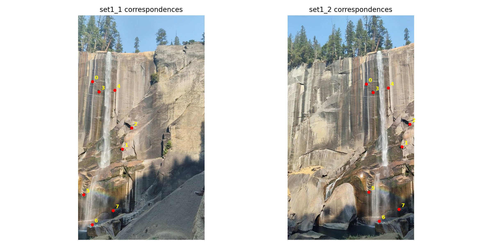
\( H = \begin{bmatrix} 0.7129 & 0.0861 & 342.08 \\ -0.3242 & 0.9172 & 57.93 \\ -0.00036 & -0.00001 & 1 \end{bmatrix} \)
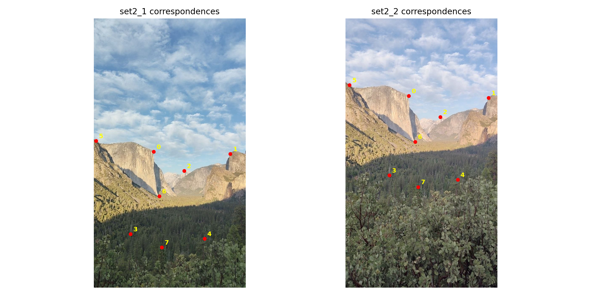
\( H = \begin{bmatrix} 1.2347 & 0.1373 & -71.28 \\ -0.0335 & 1.4484 & -457.35 \\ -0.00006 & 0.00037 & 1 \end{bmatrix} \)
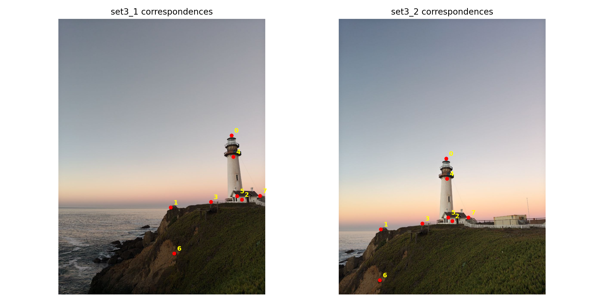
\( H = \begin{bmatrix} 1.1568 & -0.1245 & -294.70 \\ 0.2392 & 0.9941 & 7.90 \\ 0.00025 & -0.00012 & 1 \end{bmatrix} \)
warpImageNearestNeighbor(im, H) and warpImageBilinear(im, H) both use inverse warping:
the output canvas bounds are predicted by mapping the four source corners through \(H\), then for
every destination pixel the corresponding source location is found via \(H^{-1}\) and sampled, avoiding holes
in the output.
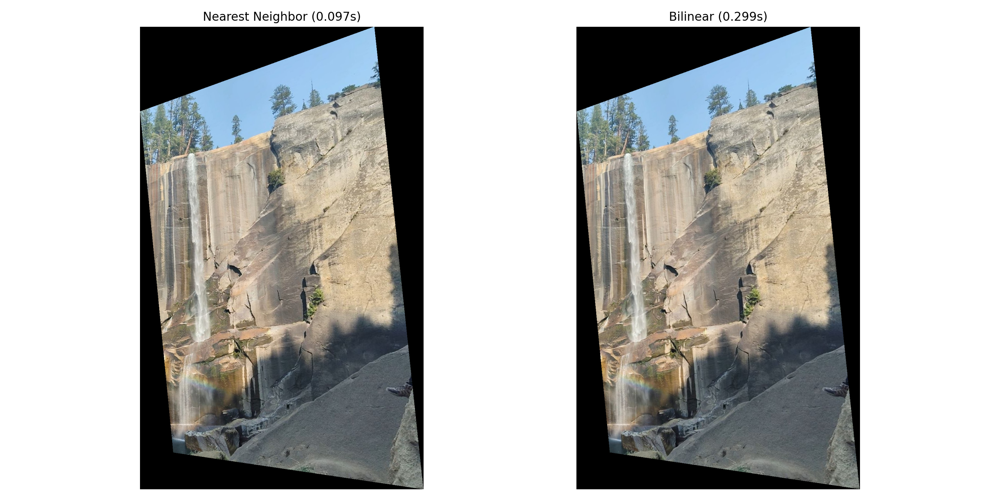
Nearest-neighbor is faster, since it does one direct lookup per pixel rather than a weighted average of four neighboring pixels, but it produces visibly blockier, stair-stepped edges (see the rectification zooms below). Bilinear interpolation takes roughly 3x the runtime across the three warps in this project, but it produces a noticeably smoother result. That extra cost is worth it here, since any blocky artifacts would otherwise be baked permanently into the final blended mosaic.
To verify computeH and warpImageBilinear independently of the mosaicing pipeline,
two separate photos containing known rectangular objects were rectified.
In each case, the four corners of the object were clicked and mapped to a rectangular target.
Warping the image with the resulting \(H\) maps the selected object corners to the specified rectangle.
For each example, a small region at the center of the rectangle was also cropped and zoomed in 6x to directly compare nearest-neighbor and bilinear
interpolation on the same pixels.
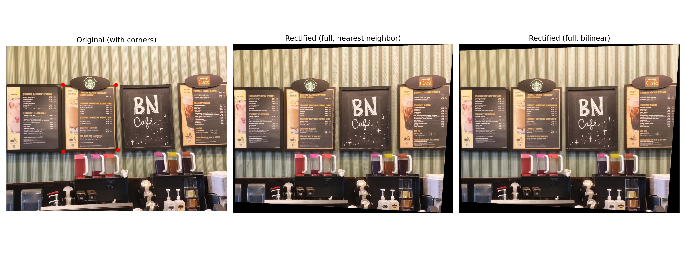
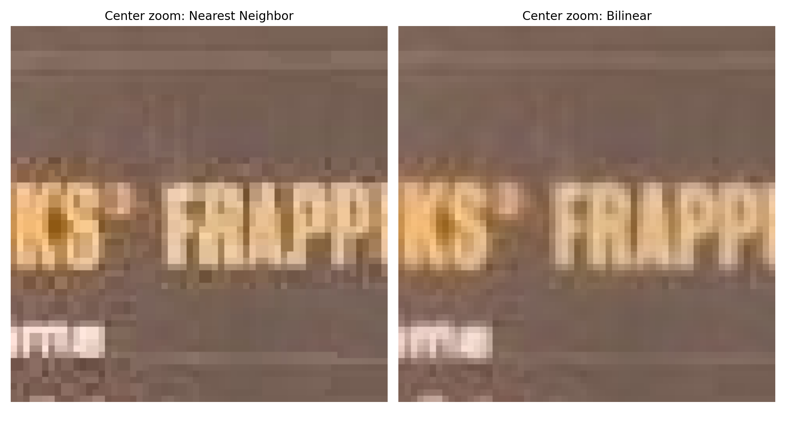
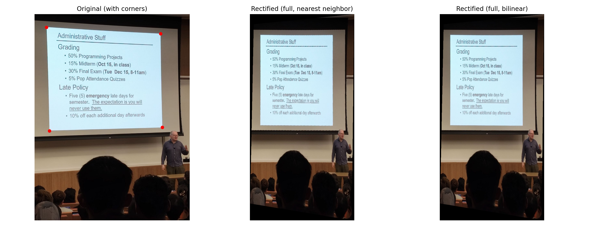
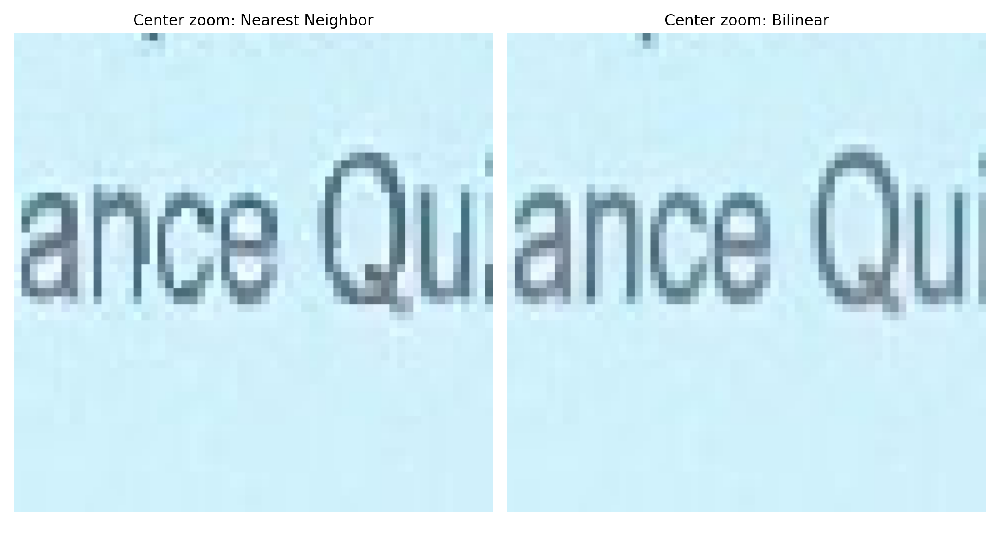
Each mosaic warps one image into the other's frame, places both on a shared canvas, and blends them using per-pixel weights from a distance transform on each image's valid mask (large near the center, tapering to zero at the warped boundary, normalized to [0, 1]). Two blending strategies are compared: simple feathering (direct weighted average) and Laplacian pyramid blending (blending each frequency band separately, which smooths low-frequency color and exposure differences across the seam more gracefully). Before the Laplacian blend, each image's valid pixels are extended outward into its invalid region using a nearest-valid-pixel fill, so the pyramid's Gaussian blur does not pull in false black values near the mask boundary.
Feather: \( I = \dfrac{w_1 I_1 + w_2 I_2}{w_1 + w_2} \)
Laplacian: blend each pyramid level \(L_1^{(k)}, L_2^{(k)}\) with its own Gaussian-smoothed weight, then reconstruct
Weight maps for this pair, confirming a smooth taper to zero at the warped image's true (skewed) boundary rather than a rectangular bounding box edge, which would otherwise cause visible wedge artifacts at the seam.
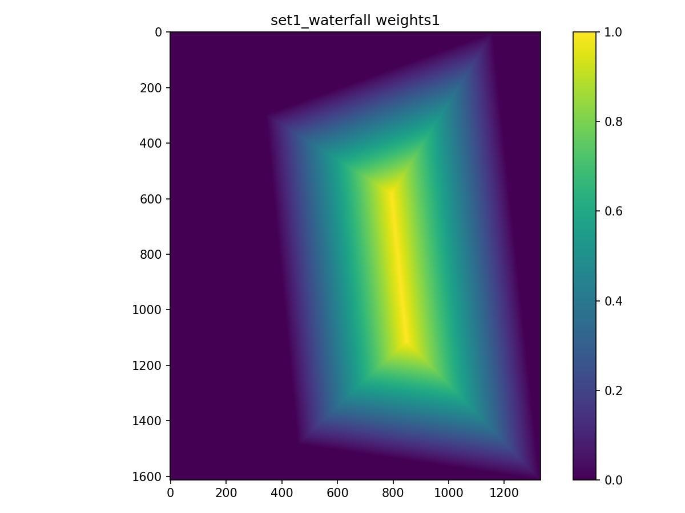
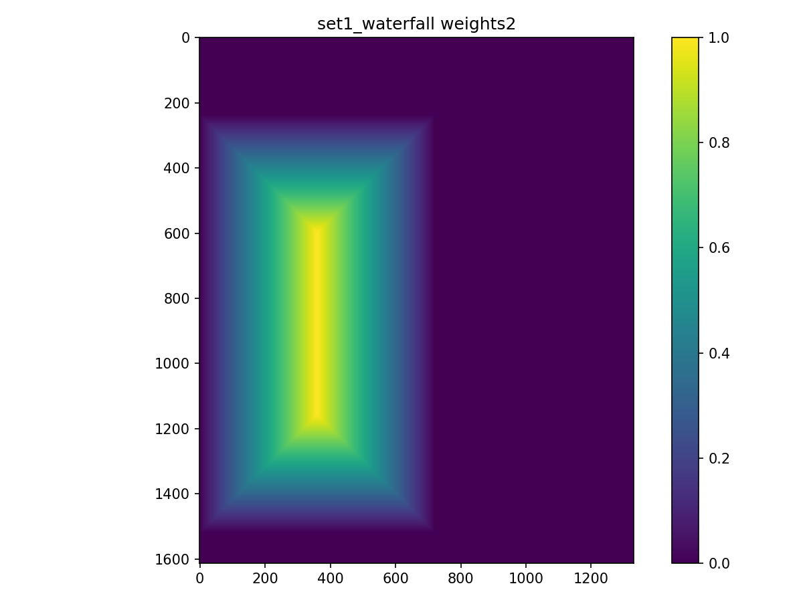
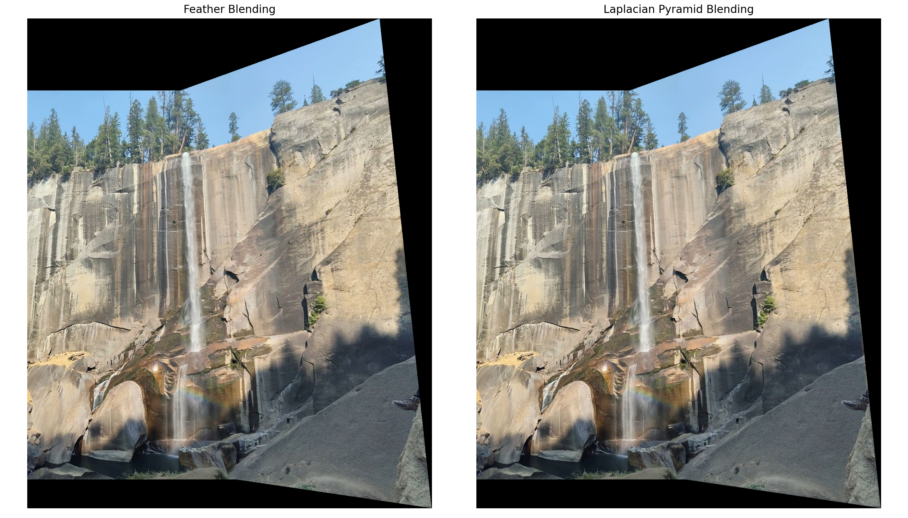
This was the most challenging scene due to the depth variation between the foreground rocks and the distant cliff face, making it more susceptible to parallax if the camera moved between shots. The initial correspondences produced a mean reprojection error of 1.75 pixels and a noticeable seam. After refining the correspondences using more distinctive rock features, the error decreased to 0.83 pixels, improving the alignment. Both feather and Laplacian pyramid blending produced visually convincing panoramas with no obvious severe ghosting, although minor alignment differences may remain in the overlapping region.
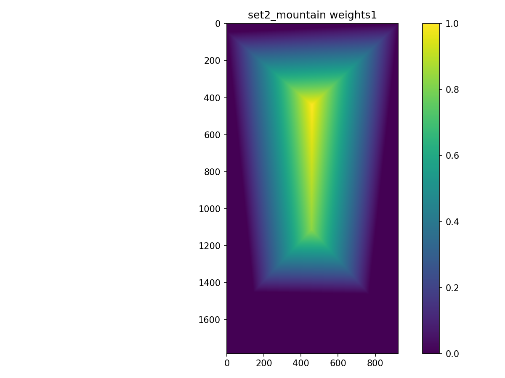
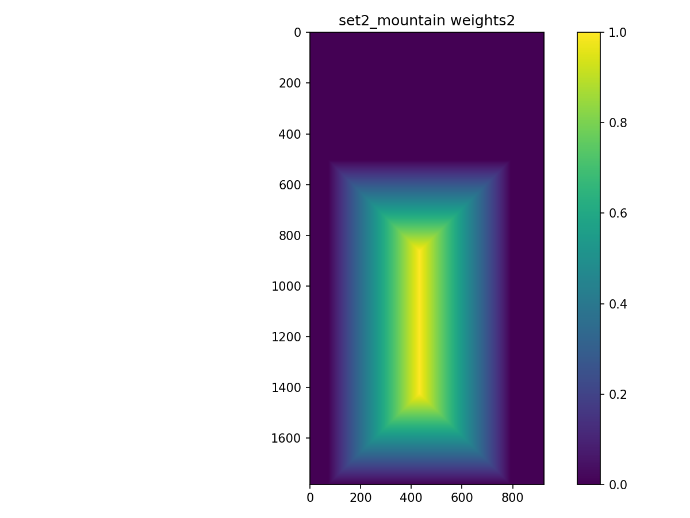
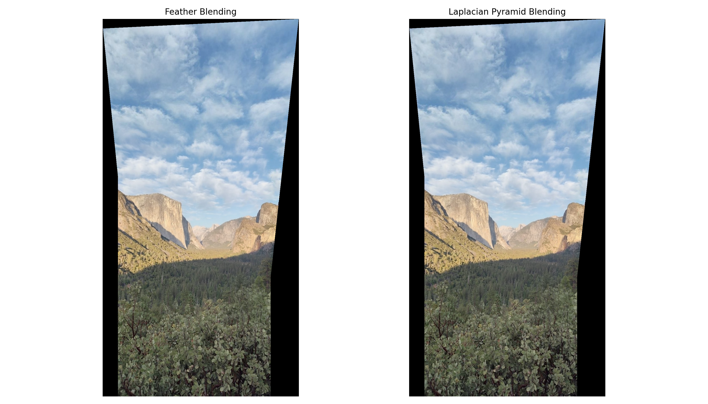
The mountain valley scene contains mostly distant features, making it suitable for homography-based alignment. Although it had the highest mean reprojection error of the three pairs (1.32 pixels), the resulting panorama shows generally good alignment of the rock edges and treeline. A faint seam remains visible in the smooth sky region, possibly due to slight exposure or color differences between the images. Laplacian pyramid blending helps soften this transition by blending low-frequency differences over a wider spatial region.
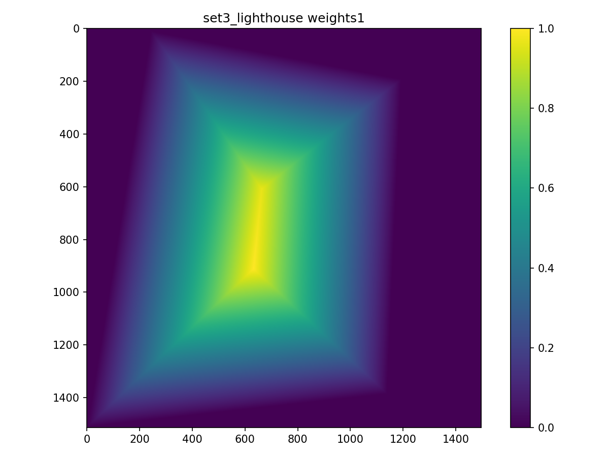
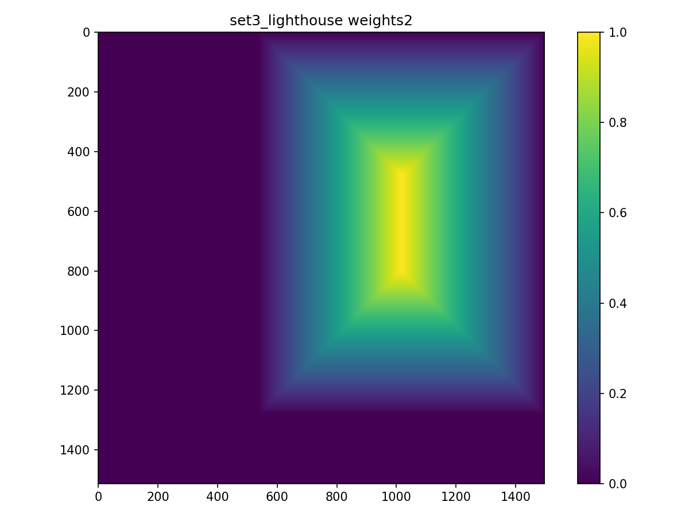
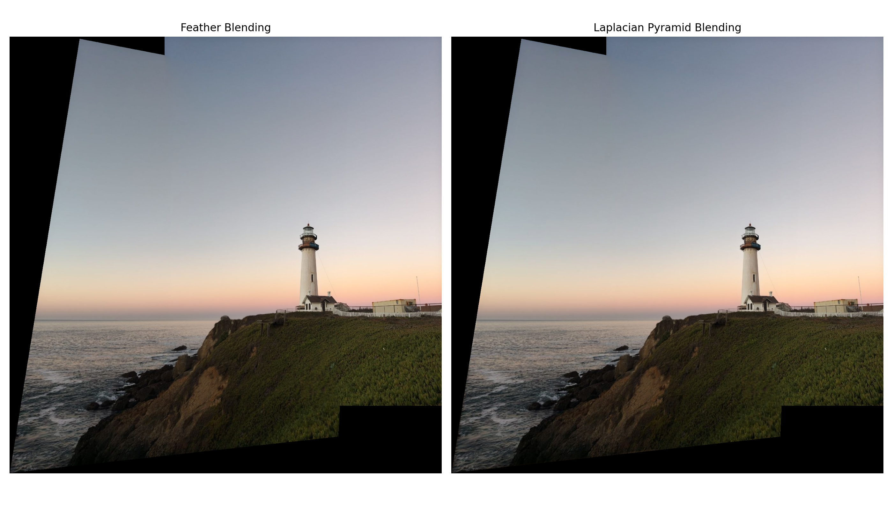
The lighthouse produced the lowest mean reprojection error of the three pairs (0.82 pixels). Sharp, high-contrast landmarks such as the lighthouse tower, fences, and buildings made it easier to select precise correspondences. The relatively distant scene also reduces the likelihood of significant parallax. The result shows good alignment of the lighthouse, cliff edge, and horizon, with no obvious ghosting.